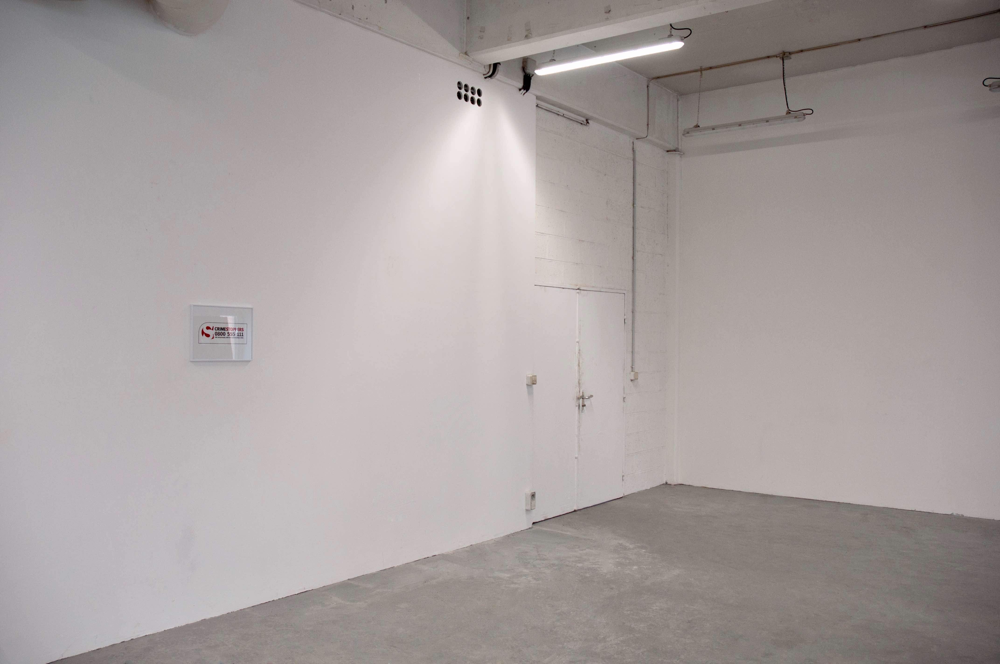

(Untitled)
I am going out for the first time this year and I am so fucking scared
I am going out for the first time this year and I am so fucking scared
Hugo Bausch Belbachir par Arnaud Ferron
Publié le dimanche 5 avril 2020
Bien que réalisé en janvier 2020, soit trois mois après l'annonce du confinement du territoire français suite à la pandémie du coronavirus, (Untitled) I am going out for the first time this year and I am so fucking scared semble, par son titre,
évoquer comme un récit anticipateur de l’après-confinement qui, malgré la joie de la vie retrouvée, a tout d’effrayant.
L’installation de Hugo Bausch Belbachir, actuellement étudiant aux Beaux-Arts de Cergy (ENSAPC), a cependant une portée qui dépasse les circonstances de l’épidémie, mais n’en n’est pas moins liée pour autant. La pancarte arbore le logo de Crimestoppers UK, une organisation indépendante d’informations sur des activités de nature criminelles et dangereuses, permettant à n’importe qui de transmettre des éléments aidant au processus d’enquête, en échange de récompenses financières.
Accrochée dans un grande pièce vide aux allures de hall d’accueil, la pancarte n’est pas sans rappeler les plans d’évacuations, ceux-là mêmes auxquels on ne porte d’attention que dans l’urgence, présents dans n’importe quel lieu public que nous fréquentons quotidiennement.
Déplacé de son contexte d’origine et utilisé tel un ready-made contemporain, le logo encadré et inchangé de Crimestoppers UK semble supposer un potentiel danger émanant du lieu où on l’observe.
Danger de l’école d’art? de la galerie? du marché de l’art?
Danger de potentiels criminels? Ou au contraire danger de l’apeuré prêt à dénoncer n’importe quelle micro incivilité?
C’est peut-être plus globalement un témoignage d’effroi livré à travers un regard enfantin envers le monde extérieur, le monde social, le lieu public.
Cet enfant pourrait aussi bien être la manifestation d’un individu complètement désorienté, qui affronte de jour en jour la banale décadence de la société moderne ; (sur)surveillance généralisée, surproduction, surconsommation, sur-mobilité… une société qui, même après une crise globale de cette ampleur (une première), n'a pas l'air d'aspirer au changement. Mais gardons espoir.
Bien que réalisé en janvier 2020, soit trois mois après l'annonce du confinement du territoire français suite à la pandémie du coronavirus, (Untitled) I am going out for the first time this year and I am so fucking scared semble, par son titre,
évoquer comme un récit anticipateur de l’après-confinement qui, malgré la joie de la vie retrouvée, a tout d’effrayant.
L’installation de Hugo Bausch Belbachir, actuellement étudiant aux Beaux-Arts de Cergy (ENSAPC), a cependant une portée qui dépasse les circonstances de l’épidémie, mais n’en n’est pas moins liée pour autant. La pancarte arbore le logo de Crimestoppers UK, une organisation indépendante d’informations sur des activités de nature criminelles et dangereuses, permettant à n’importe qui de transmettre des éléments aidant au processus d’enquête, en échange de récompenses financières.
Accrochée dans un grande pièce vide aux allures de hall d’accueil, la pancarte n’est pas sans rappeler les plans d’évacuations, ceux-là mêmes auxquels on ne porte d’attention que dans l’urgence, présents dans n’importe quel lieu public que nous fréquentons quotidiennement.
Déplacé de son contexte d’origine et utilisé tel un ready-made contemporain, le logo encadré et inchangé de Crimestoppers UK semble supposer un potentiel danger émanant du lieu où on l’observe.
Danger de l’école d’art? de la galerie? du marché de l’art?
Danger de potentiels criminels? Ou au contraire danger de l’apeuré prêt à dénoncer n’importe quelle micro incivilité?
C’est peut-être plus globalement un témoignage d’effroi livré à travers un regard enfantin envers le monde extérieur, le monde social, le lieu public.
Cet enfant pourrait aussi bien être la manifestation d’un individu complètement désorienté, qui affronte de jour en jour la banale décadence de la société moderne ; (sur)surveillance généralisée, surproduction, surconsommation, sur-mobilité… une société qui, même après une crise globale de cette ampleur (une première), n'a pas l'air d'aspirer au changement. Mais gardons espoir.
Hugo Bausch Belbachir (FR)
(Untitled) I am going out for the first time this year and I am so fucking scared, 2020
Image encadrée, jet d'encre
31 x 41 cm
@hugobauschbelbachir